Scotland
Taste it, Hike it, Enjoy it!
As every country, Scotland also has some interesting and tasty meal what should taste if you visit this country. The English kitchen was influential to the Scottish meals so You will find some familiar food. But don't miss the haggis in any form (like pizza) with neeps and tatties; the Scottish eggs; different puddings or a real Scottish salmon. Fine beers, liqueurs, whiskeys or an irn-bru soft drink can be great food supplements.
Irn bru soft drink
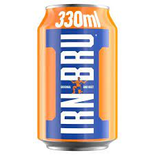Selection of the Scottish beers
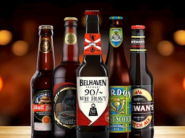Selection of the Scottish whiskies
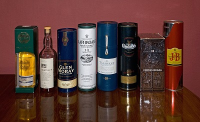Glayva liqueur
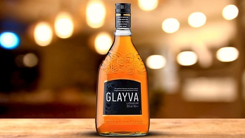The Botanist gin
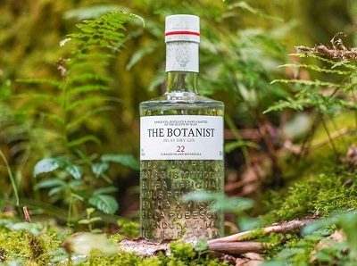Atholl Brose
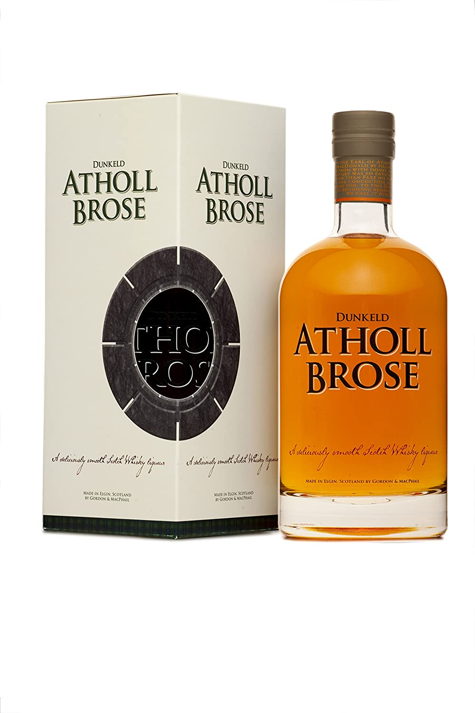Haggis with neeps and tatties
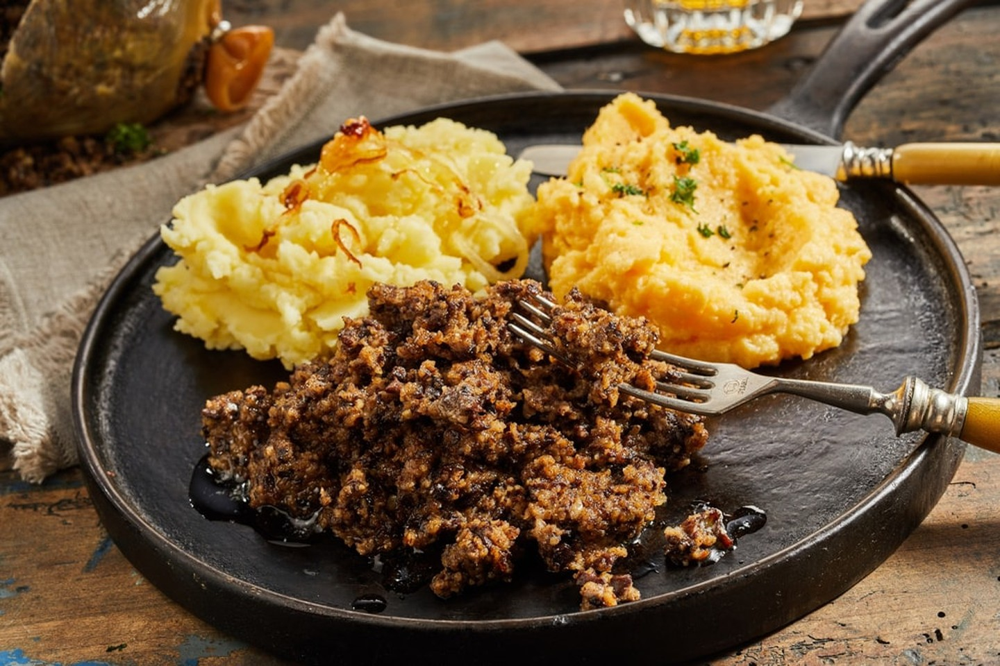White and black pudding
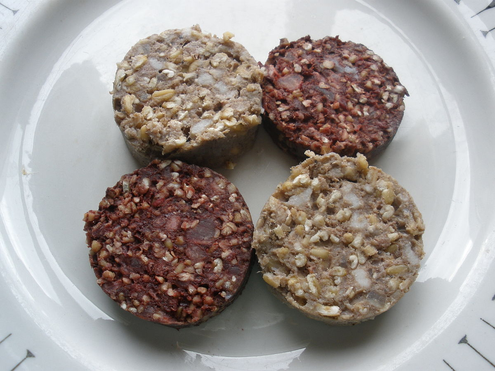Grilled and smoked salmon
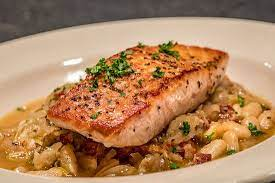Banger and smash
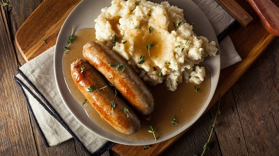Fish supper (Fish and chips)
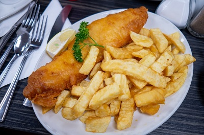Scotch eggs
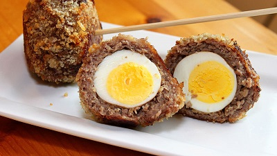